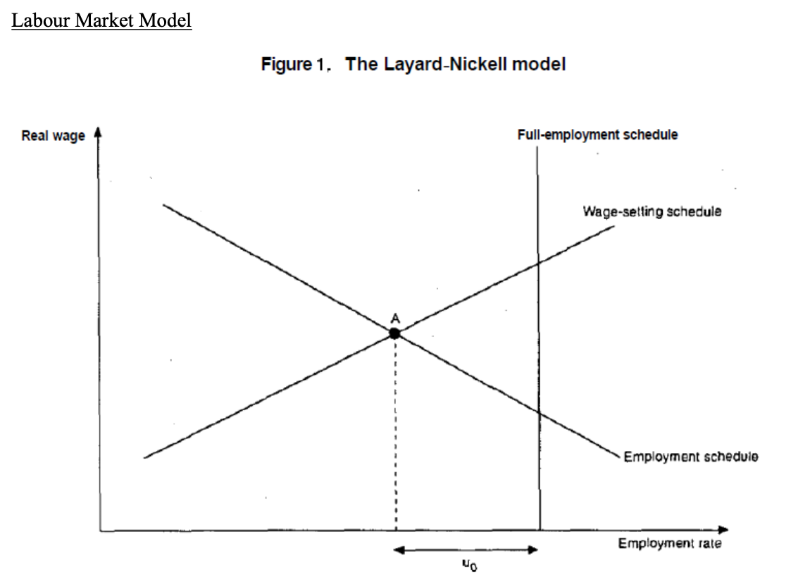
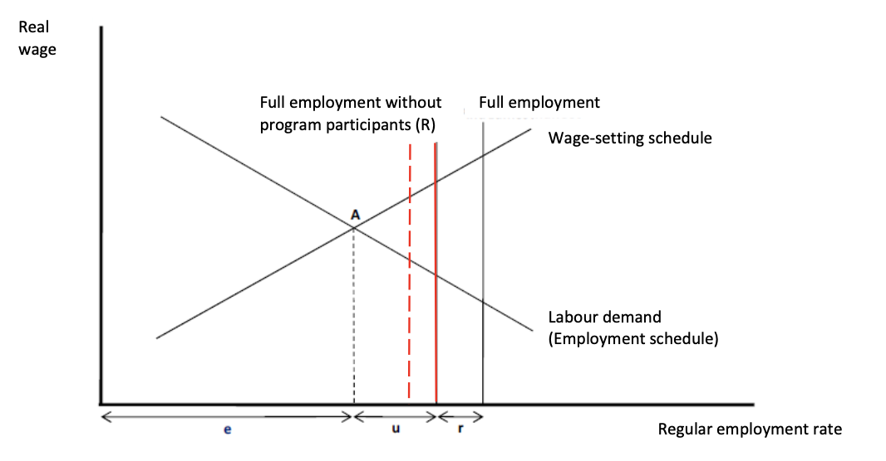
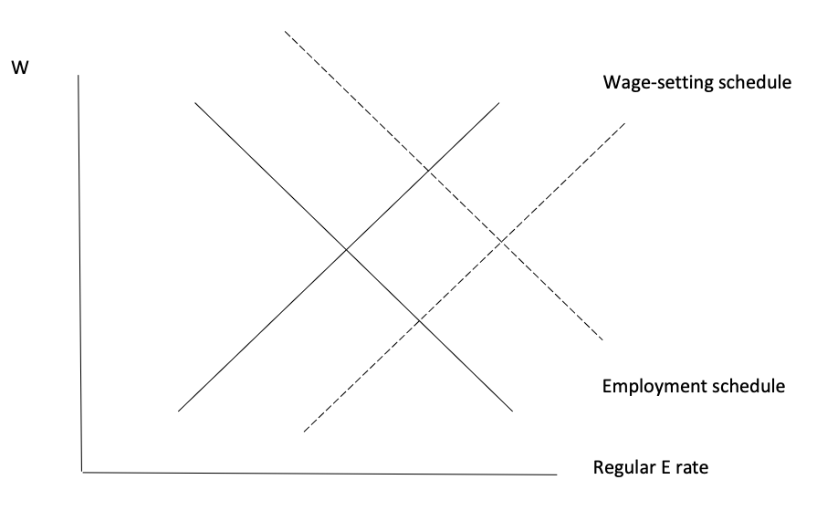
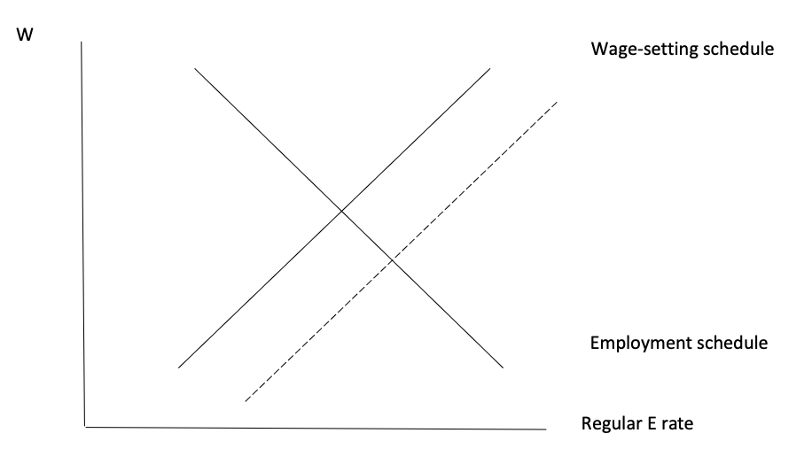
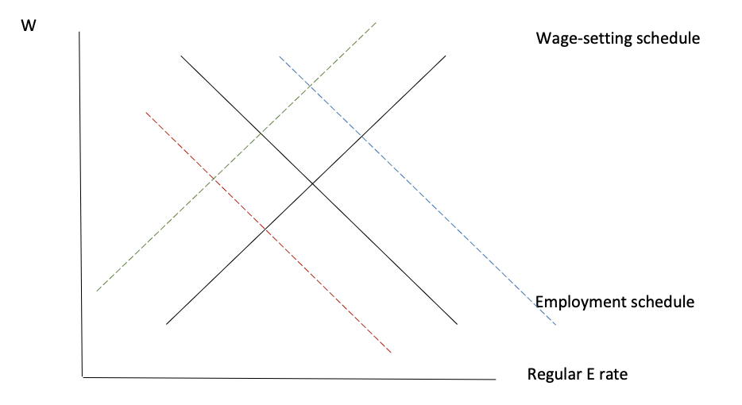
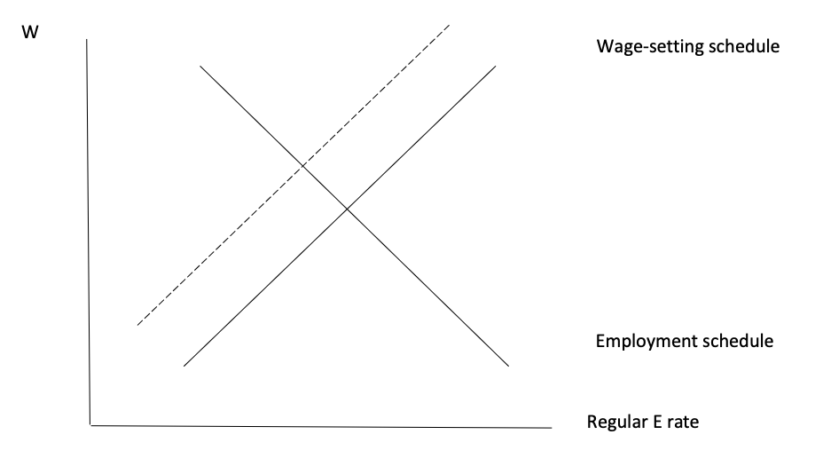
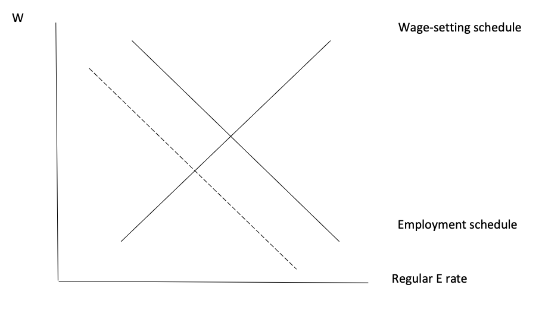

11. Active Labour Market Policies (ALMP)
🧠 I. Understanding Long-Term Unemployment (LTU): Beyond Simple Unemployment Rates
Goal of ALMPs – to increase the employment opportunities for job seekers, to return unemployed to employment as fast as possible, and to improve matching between vacancies and unemployed.
Targeted groups: long-term unemployed (more than 12 months), young, old, low-skilled, disabled.
The set of graphs collectively highlights a crucial distinction that is often overlooked in labour economics: not all unemployment is equal. What matters is not only how many people are unemployed, but how long they remain unemployed. Long-term unemployment (LTU), defined as unemployment lasting 12 or more months, represents a fundamentally different and more problematic phenomenon than short-term unemployment.
The key insight is that LTU reflects structural weaknesses in the labour market rather than temporary fluctuations. While short-term unemployment can be interpreted as part of normal labour market dynamics (job search, matching frictions), long-term unemployment signals a breakdown in the matching process between workers and jobs. It suggests that a portion of the unemployed population is no longer effectively integrated into the labour market.
⚖️ Two Dimensions of LTU: Level vs. Structure
The graphs comparing countries reveal an essential conceptual distinction between:
- the LTU rate (as a percentage of the labour force), and
- the share of LTU in total unemployment.
These two measures capture different realities. A country may have a relatively low overall unemployment rate but still exhibit a high share of long-term unemployed among the unemployed population. This indicates that while few people are unemployed, those who are tend to remain unemployed for extended periods.
This distinction is critical because it shifts the interpretation of labour market performance. A low unemployment rate does not necessarily imply a well-functioning labour market if unemployment is highly persistent. Conversely, a higher unemployment rate may be less problematic if most unemployment spells are short.
🔁 The Dynamics of Long-Term Unemployment: A Structural Trap
The time-series evidence (e.g., for Czechia) illustrates the dynamic nature of LTU and reveals a key mechanism: unemployment can transform into long-term unemployment over time.
During economic downturns, unemployment rises. However, as time passes, a subset of unemployed individuals fails to re-enter employment. These individuals gradually transition into long-term unemployment. This process creates persistence in the labour market.
The underlying mechanism is cumulative disadvantage:
- skills deteriorate over time,
- work habits weaken,
- motivation declines (discouraged worker effect),
- employers perceive long-term unemployed workers as less desirable.
As a result, the probability of re-employment decreases the longer an individual remains unemployed. This creates a self-reinforcing cycle in which long-term unemployment generates further long-term unemployment. This phenomenon explains why economic recoveries do not automatically eliminate unemployment: a portion of the unemployed population becomes structurally detached from the labour market.
📉 LTU and Labour Market Efficiency
From a theoretical perspective, high levels of LTU indicate inefficiencies in the matching process between vacancies and job seekers. In an efficient labour market, unemployed workers quickly find suitable jobs. However, when LTU is high, it implies that:
- job search is ineffective,
- worker skills do not match labour demand,
- or institutional barriers prevent re-employment.
Therefore, LTU is not simply an outcome but a symptom of deeper structural issues, including mismatches in skills, insufficient mobility, and weak job-search support systems.
🔄 The Role of ALMP
The comparison between LTU rates and participation in ALMPs suggests a strong relationship between policy intervention and labour market outcomes. Countries with low LTU rates tend to be among those where the level of participation in ALMPs is highest.
This relationship reflects the fundamental role of ALMPs in addressing the structural nature of LTU. Unlike passive policies (such as unemployment benefits), ALMPs aim to actively reintegrate individuals into the labour market.
Their mechanisms include:
- improving matching efficiency (job search assistance),
- enhancing employability (training and requalification),
- maintaining labour market attachment (public works, subsidized jobs),
- reducing discouragement and inactivity.
By intervening directly in the matching process and worker characteristics, ALMPs aim to break the persistence of long-term unemployment.
⚠️ The Risk of Misinterpretation: Why Raw Data Can Be Misleading
The graphs also highlight the importance of careful interpretation. A decline in the share of long-term unemployment, for example, may not necessarily reflect an improvement in labour market conditions. It may instead result from an increase in total unemployment, which mechanically reduces the proportion of long-term unemployed.
This demonstrates that labour market indicators must always be interpreted in context. Without understanding the underlying dynamics, one may draw incorrect conclusions about labour market performance.
🎯 Core Economic Takeaway
The central message is that long-term unemployment represents a structural and persistent problem that cannot be solved by economic growth alone. It requires targeted and active policy interventions aimed at restoring the connection between workers and the labour market.
Ultimately, the effectiveness of labour market policy should not be judged solely by its impact on the overall unemployment rate, but by its ability to reduce long-term unemployment and improve the functioning of the matching process. Long-term unemployment is not just a consequence of labour market conditions — it is a force that reshapes them.
🛠️ II. The Tools of Active Labour Market Policy
ACTIVE LABOUR MARKET PROGRAMS: All forms of intervention brought forth from institutions aimed at enhancing employment and the labour market participation.
Main forms of ALMP
- Public employment services (PES - úřad práce): Public institutions, usually through Employment Center, offers direct help in the job search on where and how look for an employment. This should reduce search costs and enhance its efficacy. Moreover employment centres can act as an intermediary passing job offers to suitable workers. It is possible that employment services are carried by other private institutions.
- Training: Public institutions and employment centers provide training to unemployment or gaining training courses of promoting on-the-job training programs. This should provide unemployed workers with skills particularly useful in the labour market enhancing thus their employability.
- Subsidized new working places and supported employment (SUPM – společensky účelná pracovní místa): Public institutions provide (monetary) incentives to firms that hire workers. It is possible that the incentives are aimed toward specific category of workers that appear to have some disadvantage.
- Direct public employment programs (VPP – veřejně prospěšné práce): Public institutions directly hire workers creating ad hoc positions. These position should be temporary and the aims is to provide direct working experience to worker that can then exploit such experience obtaining a job somewhere else.
- Start-up incentives - Support for new entrepreneurship: Public institutions offers to new entrepreneur some facilitations in building up the new firms activities. These may consists in granting better credit conditions, fiscal discounts or some support and counselling in the business activity (for example, providing legal or accounting services).
💰 Understanding Labour Market Policy Expenditures: What Do They Really Reveal?
The expenditure data on Labour Market Policies (LMP) in the Czech Republic provides much more than a simple budget breakdown. It reveals the fundamental structure of labour market intervention and highlights the persistent tension between passive support and active reintegration policies.
A key distinction emerges immediately: the difference between Passive Labour Market Policies (PLMP) and Active Labour Market Policies (ALMP). Passive policies, such as unemployment benefits, aim to provide income support to individuals who are out of work. In contrast, active policies are designed to actively improve employment outcomes by enhancing employability, facilitating job matching, or directly creating jobs.
⚖️ Passive vs Active Policies: A Structural Imbalance
The data clearly suggests that a substantial share of total labour market expenditures is allocated to passive measures, particularly income maintenance for the unemployed. This reflects a fundamental policy trade-off: governments must balance short-term welfare protection with long-term labour market efficiency.
Passive policies play a crucial role in stabilizing income and preventing poverty. However, they do not directly address the underlying causes of unemployment. In contrast, ALMPs aim to modify the structure of the labour market by improving the matching process, enhancing skills, and maintaining labour market attachment.
The persistence of high spending on passive measures indicates that unemployment is not only a temporary phenomenon but also a structural issue requiring continuous financial support.
🧠 Composition of ALMP: Different Tools, Different Mechanisms
The breakdown of active expenditures reveals that ALMPs are not a single policy but a combination of distinct instruments, each targeting a specific labour market failure.
- Training programs aim to address skill mismatches by improving human capital. These are particularly relevant in environments where technological change or structural transformation has made certain skills obsolete.
- Employment incentives, such as subsidies for hiring disadvantaged workers, attempt to correct hiring frictions and reduce the perceived risk for employers. These policies are especially important for groups facing discrimination or stigma, such as the long-term unemployed.
- Supported employment and rehabilitation programs highlight the role of inclusivity in labour market policy. By targeting individuals with disabilities or multiple disadvantages, these measures address barriers that go beyond standard economic considerations.
- Direct job creation programs, such as public works, focus on maintaining labour market attachment. While these jobs may not always be highly productive, they prevent individuals from becoming detached from the labour market, which is critical in avoiding long-term unemployment.
- Finally, start-up incentives aim to stimulate job creation from the supply side by encouraging entrepreneurship. However, their relatively small scale suggests that they play a complementary rather than central role.
📈 Dynamic Interpretation: What Changes in Spending Suggest
Variations in expenditure over time should not be interpreted mechanically. Instead, they reflect changes in economic conditions and policy priorities.
For example, increases in passive spending are typically associated with economic downturns, when unemployment rises and more individuals rely on benefits. Conversely, increases in active spending may reflect policy efforts to counteract rising unemployment or to prevent its persistence.
Importantly, the interaction between passive and active policies matters. High passive support without sufficient activation may reduce incentives to return to work, while strong activation measures without adequate income support may lead to social hardship and inefficiency in job search.
🎯 Unemployment Benefits: Incentives and Trade-offs
The structure of unemployment benefits introduces a key behavioural mechanism in labour economics: the trade-off between income security and job search incentives.
The replacement rate, defined as the proportion of previous wages replaced by unemployment benefits, is relatively high at the beginning of the unemployment spell and decreases over time. This declining profile is designed to balance two objectives:
- providing sufficient income support in the short term,
- encouraging job search and re-employment over time.
A high initial replacement rate reduces immediate financial stress and allows workers to search for jobs that match their skills. However, if benefits remain too high for too long, they may increase the reservation wage and prolong unemployment duration. The gradual decline in benefits reflects an attempt to mitigate this risk by increasing the incentive to accept job offers as unemployment persists.
🔄 ALMP and Unemployment Benefits: Complementarity or Conflict?
The interaction between ALMPs and unemployment benefits is crucial. These policies can either reinforce or offset each other.
On one hand, participation in ALMP programs can reduce the negative effects of unemployment benefits by maintaining job search activity and improving employability. For example, training programs or job placement services can counteract the potential disincentive effects of generous benefits.
On the other hand, some ALMP programs may mimic the effects of passive support if they provide financial compensation without significantly improving employment prospects. In such cases, they may inadvertently increase reservation wages and reduce the urgency of job search.
Therefore, the effectiveness of labour market policy depends not only on the level of spending but also on the design and coordination of different instruments.
⚠️ Key Economic Insight: Policy Design Matters More Than Spending
The central lesson from the data is that the effectiveness of labour market policy cannot be assessed solely by the amount of money spent. What matters is how resources are allocated across different instruments and how these instruments interact with labour market dynamics.
In particular, reducing long-term unemployment requires policies that:
- maintain labour market attachment,
- improve matching efficiency,
- enhance skills and productivity,
- and provide incentives for both workers and firms.
Simply increasing spending on passive support is unlikely to achieve these goals. Instead, a well-designed combination of active and passive measures is necessary to address both the symptoms and the structural causes of unemployment.
📐 III. Theory: Equilibrium Unemployment & The Layard-Nickell Model
Labour Market Model: Layard & Nickell (1986).
- Employment schedule – assumed to be equal to labour demand
- Wage-setting schedule – higher aggregate employment causes pressure for higher real wages (e.g., employers have to pay more to compete for labour)
- Equilibrium values of employment and the real wage – point A
- Full employment of the labour force – vertical line
- The amount of involuntary unemployment – the horizontal distance between the equilibrium point and the full-employment line (u0)

🧠 The Layard–Nickell Labour Market Model: Understanding Equilibrium Unemployment
This figure illustrates a fundamental mechanism of the labour market: unemployment can persist even when the market is in equilibrium. The graph shows that unemployment is not necessarily the result of a temporary imbalance, but can emerge as a structural outcome of how wages and employment are determined.
The horizontal axis represents the employment rate, while the vertical axis represents the real wage. The entire logic of the model comes from the interaction between two curves that capture two different sides of the labour market.
⚙️ The Two Core Forces Represented in the Graph
The graph visually separates two mechanisms that determine equilibrium:
- The Employment Schedule (Labour Demand)
The downward-sloping curve represents firms’ demand for labour. It shows that when real wages increase, firms reduce employment. This is because higher wages increase production costs, which pushes firms to either reduce hiring, substitute labour with capital, or decrease output. This curve captures the behaviour of firms: they hire workers only if it is profitable to do so at a given wage. - The Wage-Setting Schedule
The upward-sloping curve represents how wages are determined in the labour market. It shows that when employment is higher, wages tend to increase. The intuition is that when many people are employed, labour becomes scarce. Firms must offer higher wages to attract and retain workers, and workers have stronger bargaining power. This curve reflects institutional and behavioural factors such as bargaining, labour market tightness, and expectations.
🎯 Equilibrium Point A: What the Intersection Represents
Point A, where the two curves intersect, represents the equilibrium of the labour market. At this point:
- firms are willing to hire the given number of workers at that wage,
- workers (and institutions) accept that wage level.
There is no pressure for wages or employment to change. The labour market is in balance. However, this equilibrium is not optimal in terms of employment.
⚠️ The Full Employment Line: A Critical Benchmark
The vertical line on the right represents full employment, meaning that the entire labour force is employed. The key insight of the graph is that point A lies to the left of this line. This means that: even when the labour market is in equilibrium, not all workers are employed.
🔍 Involuntary Unemployment (u₀): Reading It Directly from the Graph
The distance between the equilibrium point A and the full employment line is labeled u_0. This distance represents involuntary unemployment. This is crucial:
- workers are willing to work at the current wage,
- but firms do not want to hire more workers at that wage.
So unemployment exists even though the market is “in equilibrium”.
🧩 Why Does This Unemployment Exist?
The graph shows that unemployment comes from a mismatch between:
- wage-setting behaviour (which keeps wages relatively high),
- and firms’ labour demand (which limits hiring at those wages).
Wages do not adjust downward enough to eliminate unemployment because they are influenced by bargaining, institutions, and labour market conditions. So the labour market does not clear like in a perfectly competitive model.
🔄 Interpretation: A Structural Equilibrium
This figure changes the way we interpret unemployment. Unemployment here is:
- not temporary,
- not due to a lack of demand,
- but built into the structure of the labour market.
It is the result of how wages are set relative to firms’ willingness to hire.
🧠 Link with ALMP: Why This Model Matters for Policy
This graph is essential for understanding why Active Labour Market Policies (ALMP) exist. If unemployment comes from structural mechanisms, then simply increasing demand is not enough. Policies must act on the curves:
- improving matching efficiency → shifts labour demand (more hiring),
- reducing wage pressure → shifts wage-setting,
- increasing employability → makes workers more attractive to firms.
The goal is to move the equilibrium closer to the full employment line.
🎯 Core Insight from the Graph
This figure shows that: unemployment is not eliminated automatically by the market. It depends on: how wages are determined, how firms respond to labour costs. Therefore: reducing unemployment requires structural policies, not just economic growth.
🔄 IV. Modified Model for ALMP
Distinguish between participation in labour market programmes and regular employment. Horizontal axis – rate of regular employment (excluding participation in programmes).
Labour force:
- r – participation in training and job creation programmes
- u – open unemployment
- e – regular employment
The figure can be used to illustrate various effects of LM programmes: increased placement in training or job creation programmes – leftward shift of the R-line. If nothing else happens, open unemployment u is reduced (gross effect) – but the goal is not just to move people from open unemployment but to help them to find regular job. Net effect – take indirect effects into account.

🧠 The Modified Layard–Nickell Model: Introducing ALMP into the Labour Market
This figure extends the standard Layard–Nickell model by explicitly incorporating Active Labour Market Policies (ALMP). The key innovation of this graph is that it distinguishes between different states within the labour force, rather than treating employment and unemployment as a simple binary outcome.
The horizontal axis now represents the regular employment rate only, excluding individuals participating in labour market programmes. This distinction is crucial for understanding the true impact of ALMPs.
⚙️ Decomposing the Labour Force: e, u, r
The graph introduces three components of the labour force:
- e (regular employment): individuals working in standard jobs in the economy
- u (open unemployment): individuals actively searching for a job
- r (programme participation): individuals enrolled in training or job creation programmes
This decomposition fundamentally changes the interpretation of unemployment. Rather than simply asking “how many people are unemployed?”, the model asks: how many people are effectively integrated into regular employment?
⚠️ Two Definitions of Full Employment
The graph shows two vertical reference lines:
- Full Employment (Total Labour Force): This line represents a situation where all individuals in the labour force are either employed or effectively accounted for. It includes programme participants.
- Full Employment without Programme Participants (R-line): This line represents full employment in terms of regular jobs only, excluding programme participants. This is the critical benchmark for evaluating ALMP effectiveness.
🔍 The Role of Programme Participation (r)
The distance between the two vertical lines corresponds to r, the share of individuals participating in labour market programmes. This introduces a key insight: ALMPs can reduce measured unemployment without increasing real employment. If individuals move from unemployment (u) into programmes (r), the unemployment rate decreases. However, this does not necessarily mean that they have found a regular job.
🎯 The “Gross Effect” of ALMP
When participation in programmes increases:
- individuals leave open unemployment (u),
- they enter programme participation (r),
- the measured unemployment rate falls.
Graphically, this is represented by a leftward shift of the R-line. This is called the gross effect: unemployment decreases simply because people are reclassified, not because they are employed.
⚠️ Why This Is Not Enough
The graph highlights a crucial limitation: reducing unemployment is not the same as increasing employment. If ALMPs only move people into programmes without improving their chances of finding a regular job, they do not solve the underlying labour market problem. In that case, the policy only changes the classification of individuals, not their economic situation.
🔄 The Importance of the “Net Effect”
The true effectiveness of ALMPs depends on their net effect, which includes indirect mechanisms. The key question becomes: do programmes increase regular employment (e), or do they simply shift individuals between categories? To answer this, we must consider how ALMPs affect:
- labour demand (firms’ willingness to hire),
- wage-setting behaviour,
- matching efficiency between workers and jobs,
- workers’ productivity and employability.
🧩 Interpretation: ALMP as a Structural Intervention
This figure shows that ALMPs operate at two levels:
- Mechanical (short-term): reduce open unemployment by moving people into programmes
- Structural (long-term): potentially improve employability, increase matching efficiency, facilitate transitions into regular employment
Only the second effect leads to a real improvement in labour market outcomes.
🎯 Core Economic Insight
This graph reveals a critical evaluation problem: a reduction in unemployment is not sufficient evidence that ALMPs are effective. The key objective is not to reduce unemployment mechanically, but to increase regular employment. Therefore: the success of ALMPs must be assessed based on their impact on transitions into stable employment, not just on their effect on unemployment statistics.
🧩 V. The Indirect Effects of ALMP
Indirect effects are additive to each other, some are positive (decrease unemployment), some can be negative.
1. Effects on the matching process
One of the main goals of ALMP is to increase search efficiency – shorter job seeking period, more effective matching process. ALMP increase matching through: adjusting the qualification of participants to the structure of labour demand, encourage active job seeking, increased work experience or qualification – employers more willing to hire participants.

🧠 Indirect Effects of ALMP: Why Matching Efficiency Changes Everything
This figure illustrates one of the most important mechanisms through which Active Labour Market Policies (ALMP) affect the labour market: their indirect effects on the matching process. Unlike the “gross effect” (simply moving individuals out of unemployment), this graph focuses on structural changes in how workers and jobs meet. The key idea is: ALMPs do not just move people between categories — they can transform how efficiently the labour market functions.
⚙️ What Is “Matching” in This Context?
Matching refers to the process by which unemployed workers find suitable jobs and firms find suitable workers.
- A labour market with poor matching is characterized by: long unemployment duration, many unfilled vacancies, mismatch between skills and job requirements.
- A labour market with good matching: fills vacancies quickly, reduces unemployment duration, improves job-worker compatibility.
🔍 How ALMP Improves Matching
The graph captures the idea that ALMPs act directly on matching efficiency through several channels:
- Training and requalification → workers’ skills better match labour demand
- Job search assistance → workers search more actively and effectively
- Work experience programmes → workers become more attractive to employers
- Activation policies → reduce passivity and discouraged behaviour
So ALMPs reduce search frictions.
🔄 Graphical Interpretation: Shifts of the Curves
The figure shows two key movements:
📉 1. Wage-Setting Curve Shifts Downward and to the Right
This is a subtle but crucial mechanism. When matching improves: firms fill vacancies faster, they no longer need to offer high wages to attract workers. 👉 Result: Wage-setting ↓. Interpretation: lower wage pressure, weaker bargaining power for workers, faster hiring process. This shift reduces equilibrium wages (or at least reduces upward pressure on wages).
📈 2. Employment Schedule (Labour Demand) Shifts Upward and to the Right
This reflects the firms’ side. When matching improves: vacancies are filled more quickly, hiring becomes less costly (less time, less uncertainty), firms are encouraged to open more vacancies. 👉 Result: Labour demand ↑. Interpretation: firms want to hire more workers, effective labour demand increases.
🎯 Combined Effect: Why Employment Increases
These two shifts reinforce each other: lower wage pressure → cheaper labour; better matching → easier hiring. 👉 equilibrium moves to higher employment (Regular employment ↑).
⚠️ What Happens to Wages?
The effect on wages is ambiguous. Two forces are at play: downward pressure from improved matching, upward pressure from increased demand. 👉 result: wage effect is theoretically unclear.
🧩 Key Economic Insight
This figure shows that: the most powerful effect of ALMP is not mechanical, but structural. ALMPs improve the functioning of the labour market itself by reducing frictions.
🔥 Why This Is Crucial for the Exam
This is the clean logic you need to remember:
- ALMP → better matching
- better matching → wage-setting ↓ and labour demand ↑
- → employment ↑
🎯 Final Takeaway
When ALMP improves matching efficiency, it increases employment by making hiring easier and reducing wage pressure, even without directly creating jobs.
2. Competition effects
ALMP programs can increase competition on the LM by several ways:
- Programs aimed at short-term unemployed – keep unemployed in contact with LM and lower the share which becomes long-term unemployed or inactive (demotivation) (→ keeps the labour force unchanged)
- Programs aimed at economically inactive (out of labour force) – help to re-enter the LM (→ labour force increase)
→ the number of actively looking for a job is increasing and competition increases.
ALMP tools: Counselling and job seeking assistance. Requalification/retraining – postponed but long-lasting effect. Temporary job creation, community/public works (veřejně propěšné práce), subsidized jobs – keep unemployed in contact with LM, increase their experience.
→ wage setting curve moves downwards (firms do not have to attract workers by high wages). ➔ lower wages and higher regular employment.

🧠 Competition Effects of ALMP: Increasing Labour Supply Pressure
This figure illustrates another key indirect channel through which Active Labour Market Policies (ALMP) affect the labour market: the increase in competition among workers. Unlike matching effects (which improve efficiency), competition effects operate through changes in labour supply behaviour. The central idea is that ALMPs increase the number of individuals actively participating in the labour market.
⚙️ The Core Mechanism: More Active Job Seekers
ALMP programs affect participation in two main ways:
- Programs targeting short-term unemployed prevent individuals from becoming long-term unemployed or discouraged. They maintain individuals’ attachment to the labour market.
- Programs targeting inactive individuals (those outside the labour force) encourage re-entry into job search.
In both cases, the result is the same: more individuals are actively searching for jobs. This increases effective labour supply.
🔄 Graphical Interpretation: Downward Shift of Wage-Setting
The key movement shown in the graph is a downward shift of the wage-setting curve. Why? Because when more workers are actively searching: competition for jobs intensifies, workers have weaker bargaining power, firms no longer need to offer high wages to attract workers. 👉 Result: Wage-setting ↓. This reflects a decrease in equilibrium wage pressure.
📉 Economic Intuition: Why Wages Fall
The mechanism is straightforward: more job seekers → more competition → workers accept lower wages → lower wage demands → firms can hire at lower cost. This is not due to productivity changes, but purely due to market pressure.
📈 Impact on Employment
Lower wages have a direct effect on firms’ behaviour: labour becomes cheaper, firms increase hiring. 👉 Result: Regular employment ↑. So, unlike the matching effect (which improves efficiency), the competition effect increases employment by reducing wages.
⚠️ Important Distinction: Efficiency vs Pressure
This is a crucial conceptual distinction:
- Matching effect → better jobs, better allocation
- Competition effect → more pressure on workers
The competition effect does not necessarily improve job quality or productivity. It simply increases employment by making labour cheaper.
🧩 Role of Specific ALMP Tools
The graph reflects the impact of several types of ALMP interventions: Job counselling and search assistance → keeps individuals actively searching; Retraining programs → delayed but increases long-term participation; Public works and subsidized jobs → prevent detachment from the labour market. These tools increase the number of active job seekers, reinforcing competition.
🎯 Core Economic Insight
This figure shows that: ALMP can increase employment not only by improving efficiency, but also by increasing competition in the labour market. However, this comes with a trade-off: higher employment but lower wages.
🔥 Exam Logic to Remember
- ALMP → more active job seekers
- → competition ↑
- → wage-setting ↓
- → wages ↓
- → employment ↑
🎯 Final Takeaway
Competition effects increase employment by lowering wage pressure through increased labour market participation, rather than by improving productivity or matching efficiency.
3. Productivity effects
(Long-term) unemployment lowers productivity – deterioration of skills and working habits. ALMP (training and requalification, community/public works, subsidised jobs) should increase productivity (or at least keep it on the same level).
Higher productivity:
Labour demand (employment schedule):
- a) increases (moves rightward) if: Scale effect – higher productivity means that the unit cost of labour falls, cheaper labour → incentives to expand output by using more efficiency units → increase employment
- b) decreases (moves leftward) if: Substitution effect – if workers are more productive, a given output can be produced by fewer and more efficient workers → labour demand decreases
The final effect depends on labour demand elasticity – if it is elastic, higher productivity will lead to labour demand increase (the scale effect dominates the substitution effect only if labour demand is elastic). Higher productivity can also push the wages up → wage setting curve moves left and up (which lowers regular employment).
➔ the unemployment rate might not decrease; but likely welfare gains from the higher productivity (output) in the economy.

🧠 Productivity Effects of ALMP: Why Higher Productivity Does Not Guarantee Lower Unemployment
This figure illustrates one of the most complex and counterintuitive mechanisms of Active Labour Market Policies (ALMP): their effect on productivity. At first glance, the logic seems simple: if ALMP increases workers’ productivity, employment should increase. However, the graph shows that this is not necessarily true. The effect of higher productivity on employment is ambiguous and depends on two opposing economic forces.
⚙️ Why Productivity Matters in the Labour Market
Long-term unemployment tends to reduce productivity through: skill deterioration, loss of work habits, reduced motivation. ALMP programs aim to reverse this process by: training and requalification, maintaining work experience (public works, subsidized jobs), keeping workers attached to the labour market. As a result, workers become more productive.
🔄 Two Opposing Effects: Scale vs Substitution
The key insight of the graph is that higher productivity generates two conflicting effects on labour demand.
📈 1. The Scale Effect (Positive for Employment)
When productivity increases: each worker produces more output, the cost per unit of output decreases, firms become more competitive. 👉 Firms respond by expanding production. This leads to: Labour demand ↑. Graphically: the employment schedule shifts to the right. Interpretation: firms want to hire more workers because production is more profitable.
📉 2. The Substitution Effect (Negative for Employment)
At the same time, higher productivity means: fewer workers are needed to produce the same level of output. 👉 Firms can replace multiple low-productivity workers with fewer high-productivity workers. This leads to: Labour demand ↓. Graphically: the employment schedule shifts to the left.
⚖️ Which Effect Dominates?
The final outcome depends on labour demand elasticity.
- If labour demand is elastic: firms expand production significantly, the scale effect dominates, employment increases.
- If labour demand is inelastic: firms do not expand much, the substitution effect dominates, employment decreases.
🔄 Effect on Wages: Another Source of Ambiguity
Higher productivity also affects wages. Workers who become more productive: are more valuable to firms, may demand higher wages. 👉 Result: Wage-setting ↑. Graphically: wage-setting curve shifts upward and to the left. This creates upward pressure on wages.
⚠️ Combined Effect: No Clear Impact on Employment
The figure shows multiple possible movements: labour demand may shift left or right, wage-setting shifts upward. 👉 Therefore: the overall effect on employment is uncertain. Employment may: increase, decrease, or remain unchanged.
🎯 Crucial Insight: Productivity ≠ Employment
This is the key takeaway: increasing productivity does not guarantee lower unemployment. Even if ALMP improves workers’ skills and efficiency, the labour market outcome depends on how firms adjust production and hiring.
🧩 Welfare Perspective: Why Productivity Still Matters
Even if employment does not increase, higher productivity leads to: higher total output in the economy, greater efficiency, potential long-term gains in living standards. So: ALMP can improve welfare even without reducing unemployment.
🔥 Exam Logic to Remember
- ALMP → productivity ↑
- → two effects: scale effect → employment ↑; substitution effect → employment ↓
- outcome depends on labour demand elasticity
- wage-setting ↑ (wage pressure)
- → final effect on employment = ambiguous
🎯 Final Takeaway
Productivity-enhancing ALMP can increase output and efficiency, but its effect on employment depends on the balance between scale expansion and labour-saving substitution.
4. Reduced welfare losses for the unemployed
An explicit aim of active labour market policy is to reduce the welfare loss from being out of work. The higher the wage level, the higher the welfare loss. Participation in LM programmes reduces the welfare loss of the unemployed:
- a LM programme may offer higher compensation than the unemployment benefits (→ an expansion of LM programmes will have effects similar to a rise of the unemployment benefits)
- decreases the risks of future "unemployability"
→ lower welfare loss → pressure on higher wages (participants want higher wage) → wage-setting curve moves upward. ➔ lower employment, higher wages.

🧠 Reduced Welfare Loss for the Unemployed: When ALMP Can Increase Wages and Reduce Employment
This figure illustrates a less intuitive effect of Active Labour Market Policies (ALMP): by reducing the hardship associated with unemployment, these policies can actually increase wage pressure and potentially reduce employment. This mechanism highlights a fundamental trade-off between worker welfare and labour market performance.
⚙️ The Core Idea: Unemployment Is Costly
Being unemployed generates a welfare loss for individuals: loss of income, loss of social status, psychological costs, risk of becoming unemployable over time. The higher the potential wage, the greater the perceived loss from not working.
🔄 How ALMP Reduces Welfare Loss
Participation in labour market programs reduces this welfare loss through two main channels:
- Higher compensation: some programs provide income support that can be comparable to or higher than unemployment benefits.
- Future security: participants improve their employability and reduce the risk of long-term exclusion.
As a result: being unemployed becomes less painful.
📈 Behavioural Consequence: Higher Reservation Wage
When the cost of unemployment decreases: workers become less desperate, they are less willing to accept low-paying jobs, they demand better wages. 👉 This leads to an increase in the reservation wage.
🔄 Graphical Interpretation: Upward Shift of Wage-Setting
The graph captures this mechanism through a shift of the wage-setting curve upward and to the left. Interpretation: at any given employment level, workers now require higher wages; firms must offer higher wages to hire. Wage-setting ↑
📉 Impact on Employment
Higher wages have a direct effect on firms: labour becomes more expensive, firms reduce hiring. 👉 Result: Regular employment ↓. This is the opposite of the matching and competition effects.
⚠️ Key Trade-Off: Welfare vs Employment
This figure reveals a fundamental tension in labour market policy: ALMP improves the well-being of unemployed individuals, but it may reduce employment by increasing wage pressure. So: policies that protect workers can weaken incentives to accept jobs.
🧩 Interpretation: Similarity with Unemployment Benefits
This mechanism is very similar to the effect of increasing unemployment benefits: both reduce the cost of unemployment, both increase reservation wages, both can lead to lower employment. The difference is that ALMP may also generate positive effects (skills, matching), which can offset this negative channel.
🎯 Core Economic Insight
This figure shows that: ALMP can have unintended negative effects on employment by reducing the urgency of job search.
🔥 Exam Logic to Remember
- ALMP → welfare loss ↓
- → reservation wage ↑
- → wage-setting ↑
- → wages ↑
- → employment ↓
🎯 Final Takeaway
By reducing the cost of being unemployed, ALMP can increase wage demands and reduce employment, highlighting a trade-off between social protection and labour market efficiency.
5. Deadweight and substitution effects
The deadweight loss – the hirings from the target group that would have occurred also in the absence of the programme. Deadweight loss – if hirings from the target group would have occurred even without the programme – lowest for LTU.
Substitution effect – the extent to which jobs created for a certain category of workers (youth, mothers) simply replace jobs for other categories. Substitution effect is caused by the change of relative wage costs (subsidies to employers for hiring workers from the disadvantaged group).
➔ Labour demand (for open unemployed, i.e. unemployed without programme participants) decreases – regular employment decreases, wage decreases.
Camlfors (1994, p. 18): empirical estimates – deadweight and substitution effects represented 70–90% of the gross number of jobs created.
A principle of additionality should be imposed on public work programmes – should be designed to be of such a character that they would not otherwise have been undertaken; the programmes should not replace regular jobs.

🧠 Deadweight and Substitution Effects: Why ALMP May Overstate Its True Impact
This figure illustrates one of the most important limitations of Active Labour Market Policies (ALMP): the difference between gross job creation and net employment effects. At first glance, ALMP programs (such as hiring subsidies or public jobs) appear to create employment. However, this graph highlights that a large share of these “created jobs” may not represent real additional employment.
⚙️ The Core Problem: Not All Created Jobs Are Truly New
The key idea is that: observed job creation can be misleading because some jobs would have existed even without the policy, or simply replace other jobs. This leads to two major effects: deadweight loss and substitution effect.
🔍 1. Deadweight Effect: Jobs That Would Have Happened Anyway
The deadweight effect refers to situations where: firms receive subsidies to hire certain workers, but they would have hired them even without the subsidy. 👉 The policy does not change firm behaviour — it only transfers money. So: the job is counted as “created”, but it is not additional.
🔄 2. Substitution Effect: Jobs That Replace Others
The substitution effect occurs when: firms are incentivized to hire a specific group (e.g., youth, long-term unemployed), but they replace other workers instead of increasing total employment. For example: a firm hires a subsidized worker but does not hire (or replaces) a non-subsidized worker. 👉 total employment does not increase — it is just reallocated.
📉 Graphical Interpretation: Decrease in Labour Demand for Non-Participants
The graph shows a leftward shift of the employment schedule (labour demand). Interpretation: firms substitute toward subsidized workers, demand for other workers (non-participants) decreases. Labour demand ↓
📉 Effect on Wages
As labour demand for the general (non-targeted) workforce decreases: competition among workers increases, wages decline. Wages ↓
⚠️ Key Result: Lower Employment and Lower Wages (Net Effect)
Even though ALMP programs create jobs in a targeted group, the overall effect can be: lower total employment (or much smaller increase than expected), lower wages. This is a negative indirect effect.
🔥 Why This Is a Massive Issue in Practice
Empirical evidence (Calmfors, 1994) shows that: deadweight + substitution effects can represent 70–90% of gross job creation. This means: 👉 most “created jobs” may not be real net gains.
🧩 Policy Implication: The Principle of Additionality
To avoid these problems, policies must follow the principle of additionality: jobs created by ALMP should be jobs that would NOT exist without the program. For example: public works should not replace private sector jobs; subsidies should target workers who would not otherwise be hired.
⚖️ Key Insight: Redistribution vs Creation
This figure reveals a fundamental distinction: some ALMP effects are about creating jobs, others are about redistributing existing jobs. Deadweight and substitution effects belong to the second category.
🎯 Exam Logic to Remember
- ALMP → subsidies / targeted hiring
- → two problems: deadweight → no real change; substitution → job replacement
- → labour demand for others ↓
- → wages ↓
- → net employment effect small or negative
🎯 Final Takeaway
A large part of ALMP “job creation” may be illusory, as deadweight and substitution effects reduce the true net impact on employment.
🔬 VI. How to measure effectiveness of ALMP
Effects of ALMP unclear – depend on specific policy and labour market characteristics.
- Macroeconomic studies – the effect of ALMP on aggregated LM (unemployment rate, wage level)
- Experimental studies – program participants (treated group) compared with non-participants (control group) → compare wage level and labour market status of both groups after the program
Empirics – ALMP in the Czech Republic (Kalíšková, 2010)
Effects of ALMP participation on unemployment rate. Focuses on four program types: Retraining programs, Public works (veřejně prospěšné práce), Subsidised new working places (SUPM – Společensky účelná pracovní místa), Programs co-financed from European Social Fund (ESF).
Data – Ministry of labour and CZSO, 1999–2009, 14 Czech regions, monthly data.
Dependent variable: total unemployment rate in regions – open unemployment plus program participants.
Explanatory variables: Rate of participation in the programs = participants / all unemployed (%) (separately for each program type), National U rate – to catch aggregate cycle, Regional GDP – proxy for regional specifics, Lagged U rate (in some models) – to control the time dependency of U rate.
Experimental studies and programme evaluations
In practical applications – hard to define the control group (non-participants) - most LM programmes require registered unemployment → majority of the registered unemployed sooner or later enter some of the programmes. comparing results for the same groups (defined by education, age, gender, employment history, region) participating in different programs.
Projekt Nové pracovní příležitosti: SUPM a VPP (2015–2019)
Project “New employment opportunities” public works (VPP) - one of the largest program at national level.
Who are the participants?
SUPM – higher share of women (64%); secondary educated (72%); mean age 40;
VPP – similar shares of men and women; secondary (47%) and primary (46%) educated; mean age 45 ↔ target group: more often people with cumulated disadvantages, disabled, immigrants etc.
Whom the programmes help?
The evaluation report includes logistic regressions (based on individual data): the probability of being employed after 18 months the individuals entered the programme. Explanatory variables: gender, age, education, disadvantages (immigrants/minorities, disabled, other disadvantage, homeless), region, the quarter of the entry, duration of support in months.
findings: (+) female, (+) higher education, (+) duration of support; (-) disabled (in VPP also (-) immigrants/minorities); statistically significant regional differences (mainly in VPP).
Empirical Evaluation of ALMP: What the Graphs Show in Practice
These graphs shift the analysis from theory to empirical evaluation. The objective is no longer only to understand how Active Labour Market Policies should work in theory, but to assess whether they actually improve labour market outcomes in practice.
The central message is that ALMPs can help, but their effects are not automatic, not uniform, and not always persistent over time. The graphs suggest that programme participation can improve employment prospects for some groups, but the impact depends strongly on the type of programme, the target group, and the structural barriers faced by participants.
Programme Entries and the Number of Job Seekers
The first graph compares entries into two programmes, VPP and SUPM, with the total number of registered job seekers. The key point is not the exact monthly movement, but the relationship between programme activity and unemployment.
The graph shows that programme participation fluctuates while the number of job seekers follows its own broader trend. This means that a rise in programme entries should not automatically be interpreted as proof that the labour market is improving. A programme may expand because policymakers are reacting to unemployment, not because the programme itself is reducing unemployment.
This is important because ALMP participation is an input, not an outcome. More people entering programmes does not necessarily mean that more people are moving into stable jobs. It may simply mean that the public employment service is placing more unemployed individuals into temporary measures.
The graph therefore raises a key evaluation problem: we must distinguish between programme intensity and programme effectiveness. A country or region may spend more on ALMP or enrol more people in programmes, but the real question is whether participants later obtain regular employment.
This also connects to the theoretical distinction between gross and net effects. The gross effect is the immediate movement of people into programmes. The net effect is whether these people would have found jobs anyway, whether they replace other workers, and whether their employment outcome improves in the long run.
Economic Activity Before and After Programme Entry
The second graph is more directly useful for evaluation because it follows participants before and after programme entry. It asks a more meaningful question: what happens to people after they enter an ALMP programme?
Before entering the programme, many participants are unemployed or inactive. This confirms that ALMP targets people who are already weakly attached to the labour market. At the moment of entry, everyone is classified as unemployed, because registered unemployment is generally required for programme participation.
After participation, the share of employed individuals increases strongly. This suggests that the programmes do have a positive activation effect. They help some participants move from unemployment or inactivity into employment.
However, the graph also shows that this improvement is not fully stable. Employment outcomes appear to weaken after some time, especially after around twelve months. This is a very important result. It suggests that ALMP may improve short-term transitions into employment, but it does not always guarantee durable labour market integration.
The economic interpretation is that some jobs obtained after programmes may be temporary, subsidised, or fragile. Participants may enter employment for a while, but then return to unemployment or inactivity once the support ends or once the temporary job contract expires.
Therefore, the graph does not say “ALMP does not work”. It says something more subtle: ALMP can work as an activation tool, but its long-term effectiveness depends on whether it creates stable employment, not just short-term exits from unemployment.
Why the Employment Effect May Decline Over Time
The decline in employment after some months is especially important to understand.
One possible explanation is that some programmes improve employability only temporarily. For example, public works may maintain work habits and provide recent experience, but they may not give participants skills that are strongly valued in the regular labour market.
Another explanation is that employers may use subsidised programmes as a temporary source of cheaper labour. Once the subsidy or programme support ends, the participant may not be retained.
A third explanation is that participants often face deeper barriers than unemployment alone. They may have low education, health problems, childcare constraints, weak networks, age-related disadvantages, or social exclusion. A short programme can help, but it may not be enough to remove all these barriers.
This is why programme evaluation must look beyond immediate post-programme employment. The real test is whether participants remain employed after six, twelve, or eighteen months.
Target Group Differences: Why ALMP Does Not Work the Same for Everyone
The target-group graphs show a crucial point: ALMP effectiveness is highly heterogeneous. The same type of intervention does not produce the same results for young people, parents, older workers, disabled individuals, or socially excluded groups. This is one of the most important conclusions for the exam.
- For young people, the programme seems more effective because they are often closer to the labour market. Their main problem may be lack of experience rather than deep structural exclusion. For them, counselling, training, or a first work opportunity can significantly improve employability.
- For parents caring for a child, the barrier is not only skills or motivation. The main constraint may be availability, childcare, schedule flexibility, or the difficulty of combining work and family responsibilities. This means that standard ALMP tools may be insufficient unless they are combined with childcare support or flexible job opportunities.
- For workers aged 50 and above, re-employment is more difficult because of age discrimination, obsolete skills, lower mobility, and employer reluctance. Even if the programme improves skills, firms may still prefer younger applicants. This reduces the effectiveness of standard training or placement measures.
- For disabled participants, the barriers are even more structural. Employment outcomes depend not only on skills but also on workplace adaptation, employer attitudes, health constraints, and accessibility. This explains why these groups may need more targeted and longer-term support.
- For socially excluded individuals, the problem is usually multidimensional. They may face low skills, unstable housing, poor health, weak networks, discrimination, and low trust in institutions. For this group, ALMP alone may not be enough. Labour market policy must often be combined with social policy.
Main Interpretation: ALMP Is Not One Policy, but Many Different Mechanisms
The graphs show that ALMP should not be treated as one single policy category. Different programmes work through different mechanisms.
- Public works can help maintain work habits and prevent complete detachment from the labour market. However, they may not always lead to stable regular employment.
- Subsidised jobs can reduce employer risk and help disadvantaged workers enter employment. But they may also create deadweight or substitution effects if firms would have hired someone anyway or if subsidised workers replace non-subsidised workers.
- Training and retraining may have slower effects because skills take time to acquire. Their impact may appear later, but they can be more durable if they match actual labour demand.
- Job counselling and placement services can improve matching relatively quickly, especially for people who are already employable but need information, guidance, or search support.
Therefore, the effectiveness of ALMP depends on matching the right tool to the right target group.
The Central Evaluation Problem
The graphs also highlight a fundamental problem in evaluating ALMP: it is difficult to know what would have happened without the programme.
If a participant finds a job after completing a programme, we cannot immediately conclude that the programme caused the job. The person might have found employment anyway. This is the deadweight problem.
Similarly, if a subsidised worker is hired, we must ask whether this created a new job or simply replaced another worker. This is the substitution problem.
This is why experimental or quasi-experimental evaluation is important. We need a comparison group of similar individuals who did not participate in the programme. Without that, we risk overestimating the true effect of ALMP.
💡 Overall Economic Takeaway & Exam-Ready Conclusion
Taken together, the graphs show that ALMP can reduce unemployment and improve employment outcomes, but only under certain conditions. ALMP is most effective when it improves real employability, strengthens matching, and creates stable transitions into regular employment. It is less effective when it only moves people temporarily out of unemployment, creates short-term subsidised jobs, or fails to address the deeper barriers faced by disadvantaged groups.
The key lesson is that ALMP should not be evaluated only by the number of participants or immediate exits from unemployment. The real question is whether participants become sustainably attached to the labour market.
The empirical evidence suggests that ALMPs can have positive effects, especially in the short run, but their effectiveness is limited and heterogeneous.
They tend to work better for participants who are relatively close to the labour market, such as young unemployed individuals or those needing job-search assistance. They are less effective for groups facing cumulative disadvantages, such as disabled individuals, older workers, parents with childcare constraints, or socially excluded groups.
Therefore, ALMPs should be carefully targeted, evaluated over time, and combined with complementary policies when labour market barriers are not purely employment-related.
The key conclusion is: ALMPs are useful activation tools, but they are not a universal solution to unemployment. Their success depends on programme design, target group characteristics, and whether they create stable regular employment rather than temporary statistical improvements.